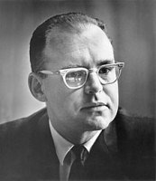
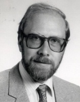

Algunas leyes de la Informática
L
a evolución de la Informática sigue en muchos aspectos un comportamiento aproximadamente exponencial. Ese comportamiento se enuncia en forma de unas llamadas "leyes", algunas de las cuales se comentan en esta página. En realidad ha sido siempre incorrecto hablar de leyes, como si se tratara de leyes de la naturaleza. Estas supuestas leyes sólo reflejan la evolución de un mercado compuesto por diferentes tecnologías. La fuerza de estas leyes ha radicado quizás en que la industria las ha utilizado como criterio para la investigación, el desarrollo y la comercialización. Durante bastantes años las empresas fueron capaces de ofrecer productos que continuaran las tendencias del pasado enunciadas en esas leyes, pero cada vez les resulta más difícil conseguirlo.

Procesadores: la ley de Moore
La ley de Moore expresa que 1965 , cuyo cumplimiento se ha podido constatar hasta la actualidad.
En 1965,
Moore, nacido en 1929, falleció en marzo de 2023, por lo que no presenciará el final de su ley.
aproximadamente cada dos años se duplica el número de transistores en un circuito integrado
. Se trata de una ley empírica, formulada por el cofundador de Intel, Gordon E. Moore
, el 19 de abril de En 1965,
Gordon Moore
afirmó que el número de transistores por unidad de superficie en circuitos integrados se duplicaba cada año y que la tendencia continuaría durante las siguientes dos décadas gracias a los avances tecnológicos. Más tarde, en 1975, modificó su propia ley al corroborar que el ritmo bajaría, y que la capacidad de integración se duplicaría aproximadamente cada 18 meses. Esta progresión de crecimiento exponencial, duplicar la capacidad de los circuitos integrados cada dos años, es lo que se denomina ley de Moore. Sin embargo, en 2007 el propio Moore determinó una fecha de caducidad para su ley: "Mi ley dejará de cumplirse dentro de 10 o 15 años".
Moore, nacido en 1929, falleció en marzo de 2023, por lo que no presenciará el final de su ley.
Discos duros: la ley de Kryder

Mark Kryder
, nacido en 1943, fue el vicepresidente de investigación de Seagate, uno de los grandes fabricante de discos duros.
En un artículo publicado en
la densidad de almacenamiento de los discos magnéticos crecía a un ritmo mayor que el de la Ley de Moore.
Desde que en 1956 se introdujeron los discos duros magnéticos, con un densidad de 2 kilobit por pulgada cuadrada, se había llegado en 2005 a discos con densidades de 110 gigabit por pulgada cuadrada, pero desde entonces el crecimiento se ha ralentizado.
De haber seguido la evolución anterior, en 2020 un disco de 2.5" de dos platos almacenaría más de 14 TB y no costaría más de 40$. En realidad, a principios de 2020 un disco de 3.5" de 14 TB costaba 400$ y a principios de 2024 su precio ronda todavía los 300$.
No solamente la ley de Kryder ha dejado de cumplirse, sino que los propios discos duros están siendo desplazados del mercado por los discos de estado sólido. Numerosos analistas vaticinan el fin de los discos duros hacia 2028.
Software: la ley de Wirth

Las leyes anteriores han alentado siempre el "tecnoptimismo" que predice un futuro maravilloso. Pero 1995 la llamada Ley de Wirth para rebajar ese optimismo. La ley, que el propio Wirth atribuyó al ingeniero suizo Martin Reiser, establece que:
 El propósito de Wirth siempre fue animar a los programadores a diseñar programas eficientes y esa tarea se volverá inevitablemente prioritaria a medida que las leyes de mejora del hardware vayan dejando de cumplirse.
El propósito de Wirth siempre fue animar a los programadores a diseñar programas eficientes y esa tarea se volverá inevitablemente prioritaria a medida que las leyes de mejora del hardware vayan dejando de cumplirse.
Niklaus Wirth
, uno de los grandes padres de la informática y creador de los lenguajes de programación Pascal, Modula y Oberon popularizó en El software se ralentiza más deprisa de lo que se acelera el hardware.
Wirth ha fallecido en enero de 2024, por lo que nunca podrá comprobar si su ley deja de cumplirse. El propósito de Wirth siempre fue animar a los programadores a diseñar programas eficientes y esa tarea se volverá inevitablemente prioritaria a medida que las leyes de mejora del hardware vayan dejando de cumplirse.
Basado en información de la Wikipedia